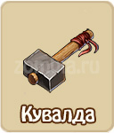

Получено: файл; исходный URL. Получены исходные байты по адресу страницы; идентичность оригинальному домену при замене хоста не подтверждена. Страница: источник.
Кувалда
ВКонтакте; данные из ZOMBIA; 21 Декабря 2011, 14:59- Тип
- нет данных
- Покупка
- нет данных
- Продажа
- нет данных
- Как получить
- Снежные пики, снежные домики, недостроенный-ковер, недостроенный шаттл (ВКонтакте, ZOMBIA; требует сверки).
- Применение
- нет данных
- Особенности
- нет данных
- Версия и дата
- ВКонтакте; данные из ZOMBIA; 21 Декабря 2011, 14:59
Данные по источнику · ВКонтакте, ZOMBIA · 21 Декабря 2011, 14:59; дата редакции не установлена
Предварительно: Данные одной исторической фанатской страницы; цифры и подписи изображений требуют сверки. Описание и условия сохранены по колонкам без додумывания.. Требуется сверка.
- Описание материала
- [изображение: Кувалда]
- Участвует в строительстве
- [изображение: Колизей]
- Как достать
- Снежные пики, снежные домики, недостроенный-ковер, недостроенный шаттл
- Участвует в создании
- нет текстовых данных; возможны неподписанные изображения
Данные по источнику · браузерная игра, платформа не уточнена · 20.03.2015
Предварительно: Прочитана отдельная историческая статья; условия могут зависеть от версии. Независимость от других сайтов не установлена.. Требуется сверка.
- Применение
- Строительство Колизея, Школьного автобуса, Корабля, Терема, Купола, Острова Чудовищ, Заброшенной шахты, Батискафа; изготовление пороха и белого и чёрного мрамора.
- Продажа и подарок
- 1000 монет; можно отправить бесплатным подарком.


Данные по источнику · браузерная социальная версия; платформа по источнику или не уточнена · 06.09.2017 — дата статьи
Предварительно: Историческая статья; версия и её точная редакция нуждаются в сверке. Возможны общие источники.. Требуется сверка.
- Поиск по совету статьи
- Недостроенные автобусы и пирамиды, крупные снежные пики, хижины, снежные деревья, драконы, Лувр, сани, терем, недостроенные ковёр-самолёт и шаттл; также туристический чемодан. Источник объединяет раскопки и другие способы, не утверждая, что чемодан — место раскопок.
Данные по источнику · браузерная игра; социальная сеть не указана · 11.03.2015 — дата статьи; дата последних правок неизвестна
Предварительно: Фанатские источники могут быть зависимыми; сверены только отмеченные факты, вероятности и актуальность не подтверждены.. Требуется сверка.
- Получение
- Автор указывает покупку за зомбаксы без цены, чемодан, раскопки под зимними декорациями и награды заданий «Марафон 26» и «Карта». Вероятности не указаны.
- Применение
- Среди построек назван Колизей; он также обозначен картинкой в карточке ZOMBIA. Другие конкретные условия требуют отдельной проверки.
Связанные сущности
нет проверенных связей — требуется сверка.